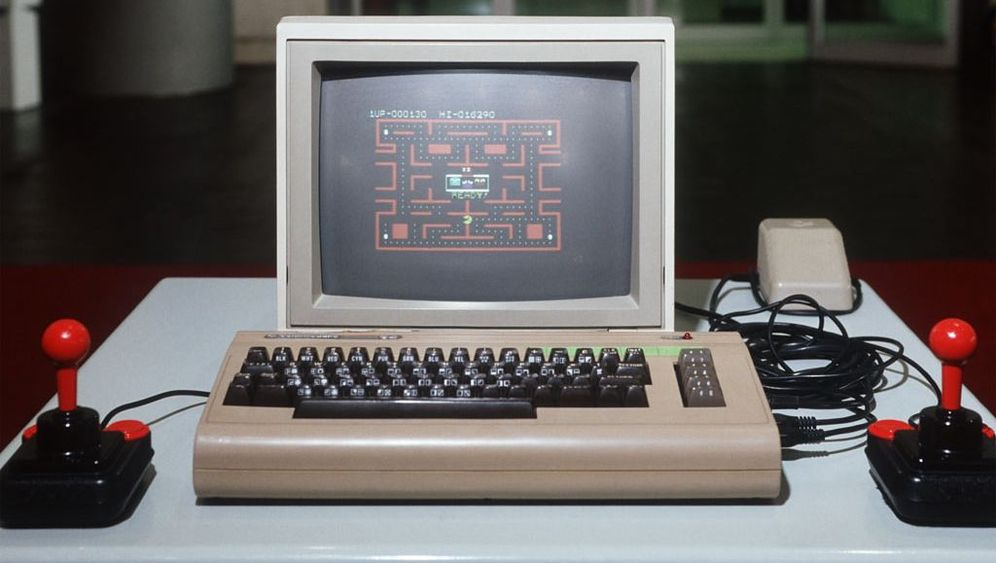
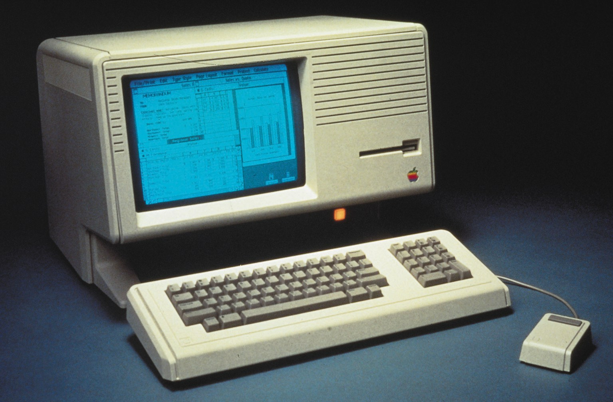
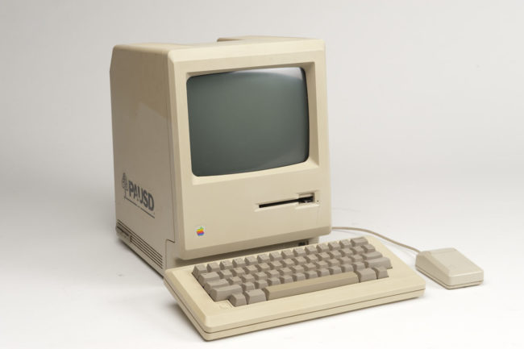

The Computers of the PC Boom

The IBM Personal Computer (model 5150, commonly known as the IBM PC) is the first computer released in the IBM PC model line and the basis for the IBM PC compatible de facto standard. Released on August 12, 1981, it was created by a team of engineers and designers directed by Don Estridge in Boca Raton, Florida.
The machine was based on open architecture and a substantial market of third-party peripherals, expansion cards and software grew up rapidly to support it.
The PC had a substantial influence on the personal computer market. The specifications of the IBM PC became one of the most popular computer design standards in the world, and the only significant competition it faced from a non-compatible platform throughout the 1980s was from the Apple Macintosh product line. The majority of modern personal computers are distant descendants of the IBM PC.
The Commodore 64, also known as the C64 or the CBM 64, is an 8-bit home computer introduced in January 1982 by Commodore International (first shown at the Consumer Electronics Show, in Las Vegas, January 7–10, 1982). It has been listed in the Guinness World Records as the highest-selling single computer model of all time, with independent estimates placing the number sold between 12.5 and 17 million units. Volume production started in early 1982, marketing in August for US$595 (equivalent to $1,576 in 2019). Preceded by the Commodore VIC-20 and Commodore PET, the C64 took its name from its 64 kilobytes (65,536 bytes) of RAM. With support for multicolor sprites and a custom chip for waveform generation, the C64 could create superior visuals and audio compared to systems without such custom hardware.
The C64 dominated the low-end computer market (except in the UK) for most of the 1980s. For a substantial period (1983–1986), the C64 had between 30% and 40% share of the US market and two million units sold per year, outselling IBM PC compatibles, Apple computers, and the Atari 8-bit family of computers. Sam Tramiel, a later Atari president and the son of Commodore's founder, said in a 1989 interview, "When I was at Commodore we were building 400,000 C64s a month for a couple of years." In the UK market, the C64 faced competition from the BBC Micro and the ZX Spectrum, but the C64 was still the second most popular computer in the UK after the ZX Spectrum.


Lisa is a desktop computer developed by Apple, released on January 19, 1983. It is one of the first personal computers to present a graphical user interface (GUI) in a machine aimed at individual business users. Development of the Lisa began in 1978, and it underwent many changes during the development period before shipping at US$9,995 with a five-megabyte hard drive. The Lisa was challenged by a relatively high price, insufficient software library, unreliable Apple FileWare ("Twiggy") floppy disks, and the immediate release of the cheaper and faster Macintosh — yielding lifelong sales of only 10,000 units in two years.
In 1982, after Steve Jobs was forced out of the Lisa project, he appropriated the existing Macintosh project, which Jef Raskin had conceived in 1979 and led to develop a text-based appliance computer. Jobs immediately redefined Macintosh as a cheaper and more usable version of the graphical Lisa. Macintosh was launched in January 1984, quickly surpassing Lisa sales, and assimilating increasing numbers of Lisa staff. Newer Lisa models were introduced that addressed its faults and lowered its price considerably, but the platform failed to achieve favorable sales compared to the much less expensive Mac. The final model, the Lisa 2/10, was modified as the high end of the Macintosh series, the Macintosh XL.
Considered a commercial failure but with technical acclaim, the Lisa introduced a number of advanced features that would not reappear on the Macintosh or the "PC" platform for many years. Among those is an operating system with protected memory and a more document-oriented workflow.
The Macintosh 128K, originally released as the Apple Macintosh, is the original Apple Macintosh personal computer. Its beige case consisted of a 9 in (23 cm) CRT monitor and came with a keyboard and mouse. A handle built into the top of the case made it easier for the computer to be lifted and carried. It had an initial selling price of $2,495 (equivalent to $6,140 in 2019). The Macintosh was introduced by the now-famous $370,000 (equivalent to $910,541 in 2019) television commercial directed by Ridley Scott, "1984", that aired on CBS during the third quarter of Super Bowl XVIII on January 22, 1984. Sales of the Macintosh were strong from its initial release on January 24, 1984, and reached 70,000 units on May 3, 1984. Upon the release of its successor, the Macintosh 512K, it was rebranded as the Macintosh 128K. The computer is Model M0001.
The heart of the computer was a Motorola 68000 microprocessor running at 7.8336 MHz, connected to 128 KB RAM shared by the processor and the display controller. The boot procedure and some operating system routines were contained in an additional 64 KB ROM chip. Apple did not offer RAM upgrades. Unlike the Apple II, no source code listings of the Macintosh system ROMs were offered.
The RAM in the Macintosh consisted of sixteen 4164 64k×1 DRAMs. The 68000 and video controller took turns accessing DRAM every four CPU cycles during display of the frame buffer, while the 68000 had unrestricted access to DRAM during vertical and horizontal blanking intervals. Such an arrangement reduced the overall performance of the CPU as much as 35% for most code as the display logic often blocked the CPU's access to RAM. This caused the computer to run slower than several of its competitors, despite the nominally high clock rate.
